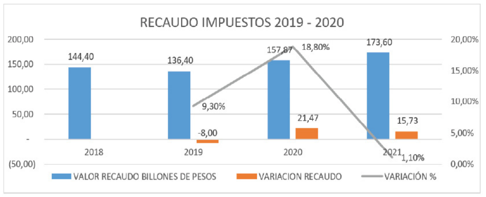
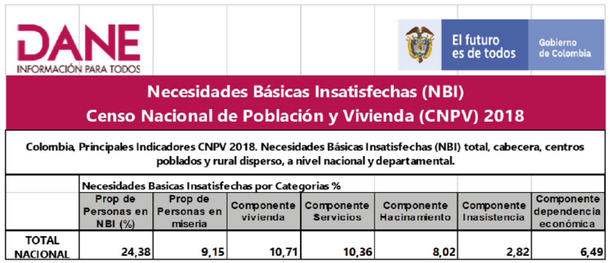
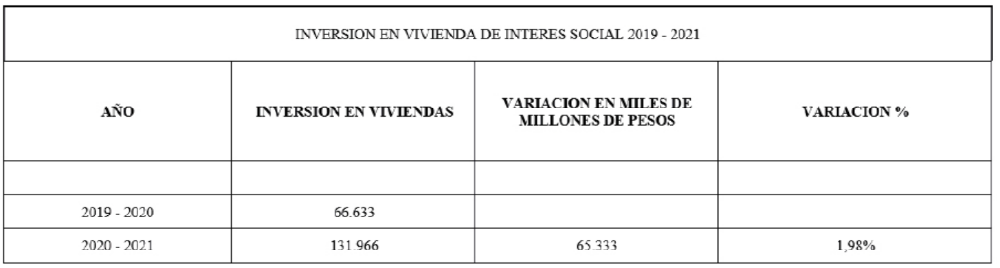
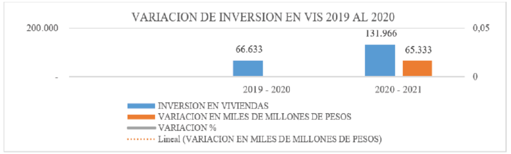

Introducción
Cortés (2021) plantea un interrogante, si ¿”La
pobreza mundial, es un problema de justicia
para los países ricos”? una de las teorías que
plantea allí es que la desigualdad y la pobreza
en “los países más pobres” está originada
desde “los países más ricos” por los grandes
beneficios que obtienen a través de la élite de
los más pobres y que ello, es originado además
por injusticias planteadas dentro de la política
de globalización.
Autores como, Alarco y Castillo (2020) han
indicado que la alta desigualdad se puede
determinar en la causa de los impactos
económicos, sociales y políticos negativos. Es
una afirmación conocida en muchos estudios
económicos.
Esta afirmación, concuerda claramente con
lo expuesto por Barkin (1998) quien desde
su teoría describe cómo la acumulación
de riquezas a favor de los que dominan el
mercado mundial, desencadena la pobreza y
con ello, el incremento de la brecha entre ricos
y pobres.
Así mismo, Navarro (2006) en su escrito,
“Modelos y regímenes de bienestar social en
una perspectiva comparativa: Europa, Estados
Unidos y América Latina”, expone los elementos
básicos del régimen de bienestar, a través de
la producción y la distribución para crear un
bienestar social; al hablar de régimen, se refiere
a normas y políticas de estado que según Flora
& Heidenheimer (1981) las personas de bajos
recursos no deben ser vistos como futuros
pobres que solo les queda buscar ayuda del
estado, por ello se deben crear unas políticas
estatales de seguridad social.
Esping, Andersen (1993) define entre varios
modelos de bienestar social: un modelo Liberal,
lo cual no ha hecho otra cosa que fortalecer el capitalismo y afianzar la posición del “rico más
rico y el pobre más pobre”.
En algunos países europeos, se tomaron
medidas a nivel gubernamental para
racionalizar la burocracia con el propósito
poder ofrecer garantías en el orden social.
Se estableció la obligatoriedad de un sistema
de seguridad social a raíz de las protestas
sociales que se generaron como exigencia en
un Estado social de Derecho, así mismo en
Estados Unidos, a causa de la Gran Depresión
a inicios de 1930, creó los planes de seguridad
social con el programa (Social Security Act)
que le permitió designar recursos a las clases
sociales más necesitadas, ello sirvió de ejemplo
para otros países como el Reino Unido, donde
se desarrolló un modelo de protección social
(Social Security Act, s.f.).
“Para que el Estado pueda atender las
necesidades básicas insatisfechas, los planes
de distribución de recursos a la clase menos
favorecida, se deben crear programas sociales,
dentro los planes de desarrollo” (Maldonado,
2017).
La función de distribución de recursos, es
una de las obligaciones de cada estado con
el propósito de generar bienestar social e
igualdad de derechos. La población infantil
es uno de los segmentos importantes en esa
distribución, no obstante, estudios revelan que
la población infantil recibe menos recursos que
los adultos, causando un alto porcentaje de
mortandad infantil. (Molgaray, 2020; Gaitán,
1999).
Estudios de la CEPAL (2011) revelan que, en
América Latina “10 millones de niños mueren
antes de cumplir 5 años a causa de una o
varias enfermedades que se han podido
evitar”. Dice el autor que, dichas muertes van
estrechamente relacionadas a la pobreza, lo
que se traduce en la falta de recursos y servicios
esenciales que satisfaga la mera supervivencia de los niños (CEPAL, 2011). Otros autores
como Atuesta, Mancero y Tromben (2018). En
su escrito “Herramientas para el análisis de
desigualdades y del efecto redistributivo de
las políticas públicas”. Donde:
“Presenta una serie de herramientas que
son clave para el estudio de las múltiples
desigualdades socioeconómicas que
caracterizan a los países de América Latina y
el Caribe y el análisis del efecto redistributivo
de las políticas públicas sociales y tributarias”.
(p. 7)
Cabe mencionar a Estrada (2010) en su escrito,
notas sobre el neointitucionalismo plantea que,
el capitalismo “solo constituye un soporte para
la acumulación de capital.” Entre los autores
que coinciden en la misma teoría están: Garay
(2002) Repensar a Colombia: hacia un nuevo
contrato social. debido a que, su investigación
refleja que, más del 60% de la población se
encuentra sumida en la pobreza”. Así mismo,
encontramos autores como: Garay (2003) “En
torno a la economía política de la exclusión
social en Colombia” y Giraldo (2007)
¿Protección o desprotección social?
Los cuatro países en América Latina que
contribuyen más a la distribución de recursos
a las clases sociales más necesitadas son:
Brasil, Uruguay, Costa Rica y Argentina “El
impacto del sistema tributario y el gasto social
en la distribución del ingreso y la pobreza en
América Latina” (Lusting, 2017).
Fresneda (2007) enfatiza en la importancia
de la medición de las necesidades básicas
insatisfechas en América Latina, para fortalecer
las políticas sociales de la región.
En Colombia son fines esenciales del Estado:
servir a la comunidad, promover la prosperidad
general y garantizar la efectividad de los
principios, derechos y deberes consagrados en la Constitución; facilitar la participación de
todos en las decisiones que los afectan y en
la vida económica, política, administrativa y
cultural de la Nación; defender la independencia
nacional, mantener la integridad territorial y
asegurar la convivencia pacífica y la vigencia
de un orden justo. (Secretaria del Senado,
1991).
Estudios recientes, alertan sobre la existencia
en Colombia reformas tributarias dirigidas a
gravar a las personas naturales más que a las
empresas, a pesar de la baja participación de
las personas en la distribución de los recursos
provenientes de los impuestos (Acosta, Azuero
y Concha, 2017).
Considerando lo anteriormente expuesto,
el presente trabajo de investigación, busca
identificar el recaudo total anual de tributos
y su distribución de lo correspondiente al
segmento de viviendas de interés social de
los años 2019, 2020 y 2021 en Colombia,
periodo para el cual se propone resolver la
siguiente pregunta problematizadora ¿Cuáles
fueron las inversiones en los programas de
viviendas de interés social en Colombia, con
base en los recaudos tributarios durante los
años 2019, 2020 y 2021? Para dar respuesta a
este interrogante, se requiere identificar, los
recaudos tributarios y los recursos destinados
para atender las necesidades Básicas
Insatisfechas de viviendas de interés social
en los años 2019, 2020 y 2021; realizar, un
análisis del comportamiento porcentual de los
valores recaudados en impuestos y los valores
destinados a los programas de viviendas
de interés social en años 2019, 2020 y 2021;
el cual permitirá conocer la incidencia de la
inversión social de los recursos del estado en
el segmento de, viviendas de interés social VIS.
Según Escallón, (2011).
La Ley 3 de 1991, creó el Sistema Nacional
de Vivienda, estableció el subsidio familiar,
reformó el Instituto de Crédito Territorial
(ICT) como entidad responsable del tema y dictó otras disposiciones que cambiaron
sustancialmente la institucionalidad pública
sectorial. El subsidio, como instrumento de
financiamiento, vinculó el ahorro familiar y
el crédito hipotecario y pretendió cambiar
de forma importante el cuestionado rumbo
de la política de vivienda existente hasta ese
momento en el país. Por su parte, la política
pública se apoyó en estrategias de mercado,
la institucionalidad pública se contrajo para
favorecer al sector privado y los esfuerzos se
centraron en la aplicación del instrumento de
financiación del subsidio familiar de vivienda.
(p. 55).
Estudios de la CEPAL y otros autores, han
hecho mención a los programas de vivienda de
interés social (VIS) que vinieron a reemplazar
a otros que no han cumplido su acometido.
Tal como señaló Chiappe (1999), en su
investigación, señalando que las políticas de
vivienda de interés social en Colombia en los
noventa, han sido un esfuerzo que el gobierno
hace para subsidiar a más hogares por medio
de ayudas económicas como subsidios, para
satisfacer sus necesidades habitacionales.
Bermúdez y Carmona (2019) hacen una relación
con factores sociales, indicando una “relación
con la inversión social y el gasto fiscal”, en la
cual hacen énfasis sobre cómo el Estado crea
estímulos y hace fácil la compra de vivienda
debido a que con ello estimula la economía.
Por su parte, Cardona (2010) analiza como la
distribución social es un factor muy importante
para el alcance de un bienestar óptimo de las
personas en una nación. Así mismo, Junguito
(2012) destaca en su estudio “Vivienda,
economía y política” como la construcción de
viviendas, constituye en un motivo reactivación
de la economía y a la vez, proporciona un
bienestar para los ciudadanos. Por otro lado,
el Ministerio de vivienda (2020) señaló que:
El Censo Nacional de Población y Vivienda
2018 reveló que el déficit de vivienda afecta a 5,1 millones de hogares colombianos, de los
cuales 2,7 millones viven en suelo urbano y
2,3 millones en suelo rural (DANE, 2020). Las
carencias rurales alcanzaron 80,9% (déficit
cualitativo 57,2% y déficit cuantitativo 23,7%),
mientras que las urbanas fueron de 24,8%
(18,7% el déficit cualitativo y 6,12% déficit
cuantitativo), lo que implica que las carencias
de vivienda rural son el triple que las urbanas.
Acevedo y Montoya (2019) hacen referencia
a los efectos positivos y negativos de las
reformas tributarias sobre las empresas y
sobre las personas. Aduce que, cuando es
negativo afecta directamente a las personas
más vulnerables.
Rivera (2016), para este autor, las asistencias
hacia las personas en condiciones de
necesidades básicas insatisfechas (NBI) han
venido aplicándose, pero, son limitadas dado
que llega hasta donde alcanzan los recursos.
En este sentido, Castro, Restrepo y López
(2020) indican que:
“La medición de las necesidades básicas
insatisfecha de la población permite establecer
políticas públicas adecuadas que detectan en
qué condiciones se encuentran, y proporciona
índices de mejoramiento de los mismos
de manera eficiente a través de programas
efectivas, en Colombia, esa situación ha
mejorado de acuerdo a lo que se vislumbra en
éste estudio.”
Acosta, O., Azuero, F. y Concha, T. (2017). “La
política fiscal, que debiera jugar un papel
fundamental en una mejor distribución del
ingreso, tiene profundas limitaciones que
han sido objeto de análisis por diferentes
misiones de expertos”. En efecto, el desbalance
estructural que ha padecido Colombia, entre
los gastos e ingresos ha hecho difícil la
inversión social, no obstante, se ha comenzado
a trabajar para hacer un mayor esfuerzo en
inversión de soluciones habitacionales. Otros
autores que coinciden con la misma teoría, son: Alarco (2014) y Rivera (2016) “presentan
el prototipo de modelo de evaluación social
para realizar inversión en las comunidades
del entorno colombiano y así mejorar sus
necesidades básicas insatisfechas”.
Fundamentación Teórica
Recaudo de Impuestos: “Es un servicio que
ofrecemos a Entidades Gubernamentales y a
los contribuyentes, tanto Personas Jurídicas
como Naturales, para que realicen de forma ágil
y segura el recaudo y pago de los Impuestos a
nivel nacional, Departamentales, Municipales y
Distrito” DIAN.
Necesidades Básicas Insatisfechas NBI
El DANE (S.f) en su sitio web oficial define
las Necesidades Básicas Insatisfechas de la
siguiente manera:
“La metodología de NBI busca determinar,
con ayuda de algunos indicadores simples,
si las necesidades básicas de la población
se encuentran cubiertas. Los grupos que
no alcancen un umbral mínimo fijado, son
clasificados como pobres. Los indicadores
simples seleccionados, son: Viviendas
inadecuadas, Viviendas con hacinamiento
crítico, Viviendas con servicios inadecuados,
Viviendas con alta dependencia económica,
Viviendas con niños en edad escolar que no
asisten a la escuela.” (p.1)
Déficit de vivienda (DANE)
El DANE, determina el déficit de vivienda de la
siguiente forma:
- Viviendas inadecuadas.
- Viviendas con hacinamiento crítico.
- Viviendas con servicios inadecuados.
- Vivienda con alta dependencia económica.
Teoría sobre la distribución de la riqueza
“La teoría marxista, concluiría que los
beneficiarios del sistema serían los capitalistas
que por su control monopólico tenderían
no sólo a mantener sino a aumentar su tasa
de ganancias, y los trabajadores también
aquí terminarían por recibir un salario de
subsistencia, definido por la cantidad de ingreso
necesario para asegurar su manutención y
reproducción. Los trabajadores no podrían
aumentar su ingreso por encima del salario de
subsistencia debido a la existencia del ejército
de reserva de desempleados y la tecnología
que contribuiría a que este proceso no se
modificara”. (Lusting, 2017).
Materiales y métodos
La investigación es de tipo descriptivo
con enfoque cualitativo, por cuanto se
basa en reflejar en términos numéricos y
porcentuales, los recaudos de impuestos, la
cantidad de recursos económicos asignados
para los programas de vivienda de interés
sociales, la relación entre el recaudo de los
impuestos y la inversión social de estado
y las necesidades básicas insatisfechas de
los hogares colombianos de vivienda de
los años (2019, 2020 y 2021). El diseño del
estudio es documental por cuanto se basa en
la revisión sistemática de bibliografía como
fuentes primarias y secundarias, las cuales
fueron obtenidas de Google académico,
Departamento Administrativo Nacional de
Estadística –DANE; Dirección de Impuestos y
Aduana Nacional –DIAN.
Haciendo uso de las palabras clave: Recaudo
Tributario, Vivienda de Interés Social,
Necesidades básicas Insatisfecha, de donde
identificaron 50 referencias bibliográficas,
artículos, científicos y recopilación de datos
estadísticos. Para el análisis de la información,
se organizó en Excel a través de tablas y gráficas
estadísticas que representen el número de
hogares y por número de personas estudiadas.
Recaudo de impuestos de los años 2019, 2020
y 2021
Conforme a lo señalado por el periódico
El Tiempo en línea, el mejor año para el
programa de Viviendas de Interés Social (VIS),
fue el 2019 (Eltiempo.com, 2019). Ahora bien,
las Viviendas de interés social se clasifican en 2
tipos, las de interés social (VIS) y las de interés
social prioritario (VIP). Dada la limitación de
datos sobre la inversión en viviendas se han
considerado, para este estudio sólo los datos
relacionados al VIS, aportados por el Ministerio
de Hacienda. Minhacienda (2020)
Las VIS se definen como “aquella que reúne los
elementos que aseguran su habitacionalidad,
estándares de calidad en diseño urbanístico,
arquitectónico y de construcción cuyo valor
máximo es de ciento treinta y cinco salarios
mínimos legales vigentes (135 SMLM)”
(Minvivienda, 2022)
De otra parte se tiene que, según datos del
Ministerio de Hacienda en su informe de
Memorias de Hacienda 2019-2020 se tiene la inversión en Viviendas de Interés Social
(VIS) fue de $66.633 millones para un total
de 170.877 viviendas, beneficiando a 5930
personas (Minhacienda, 2020, p.40).
Así mismo, del Ministerio de Hacienda en su
informe de Memorias de Hacienda 2020-2021
se tiene la inversión en Viviendas de Interés
Social (VIS) fue por un lado de $69.076 millones
para un total de 931 hogares, y por otro lado
$62.890 (Minhacienda,2021,p.30).
En este sentido, se tiene que el monto total
invertido aproximadamente desde 2019 al
2021 es de $135.709 millones para un total
de 171.808 viviendas aproximadamente. Las
tablas a continuación muestran el recaudo
tributario para el periodo 2019-2021, y la
inversión en viviendas de interés social para
los mismos años.
En la gráfica 1 se aprecia el recaudo total de
impuestos, la variación de los valores caudados
y la variación porcentual correspondiente a
cada año del periodo 2019, 2020 y 2021.

Gráfica 1. Recaudo total de impuestos de 2019, 2020 y 2021 en Billones de pesos
Fuente: elaboración propia con base en datos obtenidos de las memorias del Ministerio de Hacienda
(2022)
En la gráfica 1, se aprecia que la recaudación de impuestos ha venido creciendo en estos 3
últimos años, existiendo una variación porcentual entre el 10% y 20% interanual, lo cual reafirma
la tendencia positiva en cuanto a los recaudos de impuestos.
En este caso, se desea observar, si la inversión de estos recursos que han venido creciendo ha
venido aumentando también en inversiones para, viviendas de interés social. Comportamiento
de la inversión social del país para el periodo 2017-2021
Comportamiento de las necesidades básicas insatisfechas de los hogares colombianos
para el periodo 2017-2021
En la tabla 1, se aprecian datos de las Necesidades Básicas Insatisfechas, así como el componente
vivienda, según datos aportados por el DANE a partir del Censo de Población y Vivienda (2018).
Tabla I. Necesidades Básicas Insatisfechas (NBI), Censo Nacional de Población 2018

Fuente: DANE - Censo Nacional de Población y Vivienda (CNPV) 2018. Información correspondiente a
personas residentes en hogares particulares.
Fecha de actualización: 25 de noviembre de 2019”.
La Tabla I, refleja las Necesidades Básicas
Insatisfechas en cuanto a Viviendas de Interés
Social de los colombianos, la cual ubica el NBI
en promedio en un 24.38% a nivel nacional.
Así mismo, el componente vivienda se ubica
en 10.71%.
DANE (2019).
Inversión social y las necesidades básicas
insatisfechas de los hogares colombianos.
En la tabla II, se aprecia que la inversión en
vivienda de interés social creció en $65.333
millones de pesos, lo que representa una
variación del 1,98% entre los años 2019 al 2021
Tabla II. Inversión en Viviendas de Interés Social Entre (2019 – 2021), Cifras en Miles de
Millones de Pesos.


Grafica 2. Variación de inversión en VIS (2019-2021) en miles de millones de pesos
Conclusiones
Finalmente se puede decir que, si bien Colombia
ha venido mejorando en la recaudación de
impuestos y en sus índices de inversión social,
en términos generales, la tendencia en la
distribución de los tributos hacia las viviendas
de interés social viene creciendo a partir de
2019 como lo muestran los datos en las tablas
que reflejan estadísticas reales extraídas de los
informes de Memoria de los años 2019-2020
y 2020-2021 del Ministerio de Hacienda, los
informes del DANE y otros entes del Estado
por medio de sus instituciones encargadas.
Los recaudos tributarios y los recursos
destinados para atender las necesidades
Básicas Insatisfechas de viviendas de interés
social en los años 2019 fueron: recaudo por
valor $136,40 billones de pesos; en el año 2020
se recaudaron $157,87 billones de pesos con
una variación de $21,47 billones de pesos, y
el recaudo del año 2021 fue por un valor de
$173,70 billones de pesos con una variación
de $15,73 billones de pesos más que el año
anterior. Un análisis del comportamiento porcentual de los recaudados en impuestos
nos muestra que, hubo un incremento del
18,8% entre los años 2019 y 2020; y entre los
años 2020 y 2021, hubo un incremento del
1.10%; los valores destinados a los programas
de viviendas de interés social en años 2019-
2020 fueron por $66,663 billones de pesos y
entre los años 2020-2021 fueron por valor de
$131,966 billones de pesos, con una variación
de $65,333 billones de pesos, con una variación
porcentual del 1,98%, un resultado que
permitirá conocer la incidencia de la inversión
de los recursos del estado en el segmento de
viviendas de interés social (VIS).
Referencias
- Acevedo, J.A & Montoya, S. (2019). Reformas
tributarias y sector vivienda: un análisis al caso
colombiano. [Tesis de Pregrado, Tecnológico
de Antioquia Institución Universitaria]. https://dspace.tdea.edu.co/bitstream/handle/tda/587/Reformas%20tributarias%20y%20sector%20vivienda.pdf?sequence=1&isAllowed=y
- Acosta, O., Azuero, F. & Concha, T. (2017).
El ingreso y su distribución en Colombia.
Hogares o empresas: ¿quién debe
tributar? https://repositorio.cepal.org/bitstream/handle/11362/43129/S1701024_es.pdf?sequence=1&isAllowed=y
- Alarco, G. (2014). Participación salarial y crecimiento
económico en América Latina 1950-2011.
Revista CEPAL, 113, 1-42. https://repositorio.cepal.org/bitstream/handle/11362/36958/RVE113Alarco.pdf?sequence=1&isAllowed=y
- Alarco, G. y Castillo, C. (2020). Índice de
desigualdad y crecimiento económico en
América Latina. Investigación Económica,
79(314), 106-134. https://doi.org/10.22201/fe.01851667p.2020.314.76350
- Atuesta, B., Mancero, X. y Tromben, V. (2018).
Herramientas para el análisis de desigualdades
y del efecto redistributivo de las políticas
públicas. Santiago: CEPAL. https://repositorio.cepal.org/bitstream/handle/11362/43678/S1800511_es.pdf?sequence=1&isAllowed=y
- Barkin, D. (1998). Riqueza, pobreza y desarrollo
sustentable. México: Editorial Jus y Centro
de Ecología y Desarrollo. ISBN: 9687671041.
https://portalacademico.cch.unam.mx/sites/default/files/riqueza.pdf
- Bermúdez, A. y Carmona, J. (2019). Vivienda de
interés social en Colombia y su relación con
la inversión social y el gasto fiscal. [Tesis de
maestría, Universidad de Manizales]. https://ridum.umanizales.edu.co/xmlui/bitstream/handle/20.500.12746/5759
- Cardona, A. (s.f.). Gasto Público Social Colombia 2000-2010. https://colaboracion.dnp.gov.co/CDT/Estudios%20Econmicos/Gasto%20P%C3%BAblico%20Social%20Colombia%202000-2010.pdf
- Castro, A., Restrepo, L. & López, A. (2020).
Experiencia de medición del índice de
Necesidades Básicas Insatisfechas en barrios
en proceso de invasión en Aguachica, Cesar.
Revista Facultad De Ciencias Económicas,
28(2), 109-119. https://revistas.unimilitar.edu.co/index.php/rfce/article/view/4913
- CEPAL. (2011). Mortalidad y salud. https://www.
cepal.org/es/subtemas/mortalidad-salud
- Chiappe, M. (1999). La política de vivienda de
interés social en Colombia en los noventa.
CEPAL. http://hdl.handle.net/11362/5287
- Corredor Dimas, L. A., & González Alfonso,
J. F. (2017). Análisis de las necesidades
básicas insatisfechas para la primera
infancia en la planeación de una ciudad
con calidad de vida en Bogotá. https://ciencia.lasalle.edu.co/cgi/viewcontent.cgi?article=1124&context=economia
- Cortés Rodas, F. (2021). ¿Es la pobreza mundial un
problema de justicia para los países más ricos?
Estudios Políticos, (60), 48-70. Epub July 01,
2021. https://doi.org/10.17533/udea.espo.n60a03
- DANE. (2018). Censo Nacional de Población
y Vivienda. Bogotá: DANE. https://www.dane.gov.co/index.php/estadisticas-por-tema/demografia-y-poblacion/censo-nacional-depoblacion-y-vivenda-2018
- DANE. (s.f.). Necesidades Básicas Insatisfechas
(NBI). https://www.dane.gov.co/index.php/estadisticas-por-tema/pobreza-y-condicionesde-vida/necesidades-basicas-insatisfechas-nbi
- Escallón, C. (2011). La vivienda de interés social en Colombia, principios y retos.
Revista de
Ingeniería, (35), 55-60. https://ojsrevistaing.uniandes.edu.co/ojs/index.php/revista/article/view/149
- Esping, A. (1993). Los tres mundos del estado
del bienestar. Valencia. Edicions Alfons El
Magnanim. http://polsocytrabiigg.sociales.uba.ar/wp-content/uploads/sites/152/2014/03/Esping-Andersen-Los-tres-mundosdel-Estado-del-bienestar.-Derechos-ydesmercantilizacion.pdf
- Estrada, J. (2010). Notas sobre el neointitucionalismo.
- Flora, P. (1981). The Development of Welfare States
in Europe and America (1st ed.). Routledge.
https://doi.org/10.4324/9781351304924
- Fresneda, O. (2007). La medida de necesidades
básicas insatisfechas (NBI) como instrumento
de medición de la pobreza y focalización de
programas. CEPAL https://repositorio.cepal.org/bitstream/handle/11362/4816/S0701027_es.pdf?sequence=1&isAllowed=y
- Gaitán, L. (1999). Bienestar Social e Infancia: La
distribución social de los recursos sociales.
Intervention Psychosocial, 8(3), 331-348. https://journals.copmadrid.org/pi/archivos/50641.pdf
- Garay, L. (2002). Repensar a Colombia: hacia un
nuevo contrato social. Talleres del Milenio,
Agencia Colombiana de Cooperación
Internacional, PNUD. https://www2.congreso.gob.pe/sicr/cendocbib/con4_uibd.nsf/D3C1868DF205257D0E00216B75/%24FILE/repensaracolombia1.pdf
- Garay, L. (2003). En torno a la economía
política de la exclusión social en Colombia.
Revista de Economía Institucional,
5(8), 15-31. https://www2.congreso.gob.pe/sicr/cendocbib/con4_uibd.nsf/D3C1868DF205257D0E00216B75/%24FILE/repensaracolombia1.pdf
- Giraldo, C. (2007). ¿Protección o desprotección
social? Ediciones Desde Abajo. https://www.academia.edu/19775934/_Protecci%C3%B3n_o_desprotecci%C3%B3n_social
- Hernández Sampieri, R., Fernández Collado, C.,
& Baptista Lucio, P. (2014). Metodología de la
investigación (6a. ed.). McGraw-Hill. https://www.uca.ac.cr/wp-content/uploads/2017/10/Investigacion.pdf
- Hernández, C. (2018). La inversión social de
organizaciones del tercer sector en Colombia:
una investigación cuantitativa con base
en el mapa social del Departamento de la
Prosperidad Social-DPS. [Tesis de Magister,
Universidad Externado de Colombia]. https://bdigital.uexternado.edu.co/server/api/core/bitstreams/8f9b4282-ea17-482a-b60bbcfb619eb5c2/content
- Hommes, R., Díaz, E. & Sarmiento, L. (1996). Salto
social, equilibrio político. Análisis Político,
(27), 75-79. https://revistas.unal.edu.co/index.php/anpol/article/view/74496
- INFOBAE. (2022). En Colombia hay más 3100
proyectos de vivienda nueva conozca cuantos
aceptan subsidio. https://www.infobae.com/america/colombia/2022/02/23/en-colombiahay-mas-3100-proyectos-de-vivienda-nuevaconozca-cuantos-aceptan-subsidio/
- Ley 1537 del 2012. Por la cual se dictan normas
tendientes a facilitar y promover el desarrollo
urbano y el acceso a la vivienda y se dictan
otras disposiciones. 20 de junio de 2012. Diario
Oficial No. 48467. https://www.suin-juriscol.gov.co/viewDocument.asp?id=1683011
- Ley 1955 de 2019. Por el cual se expide el plan
nacional de desarrollo 2018-2022 pacto por Colombia, pacto por la equidad. 25 de Mayo
de 2019. Diario Oficial No. 50.964. https://www.suin-juriscol.gov.co/viewDocument.asp?ruta=Leyes/30036488
- Lizarazo, L. (2020).Las VIS tuvieron el
mejor año en la historia: minvivienda.
El tiempo. https://www.eltiempo.com/economia/viviendas-de-interes-social469464
- Lusting, N. (1982). Algunos aspectos teóricos
sobre la distribución del ingreso. Estudios
demográficos y urbanos, 10 (3), 386-398.
https://estudiosdemograficosyurbanos.colmex.mx/index.php/edu/article/view/326
- Lusting, N. (2017). El impacto del sistema
tributario y el gasto social en la distribución
del ingreso y la pobreza en América Latina.
Una aplicación del marco metodológico del
proyecto Compromiso con la Equidad (CEQ).
Trimestre Económico, 82(3), 493-568. https://www.scielo.org.mx/scielo.php?pid=S2448-718X2017000300493&script=sci_abstract
- Maestre, Y. (1997). La pobreza en la costa atlántica
según necesidades básicas insatisfechas 1985-
1993. Económicas CUC. https://repositorio.cuc.edu.co/bitstream/handle/11323/6854/
- Maldonado, P. (2017). Modelo de distribución
de recursos para los gobiernos autónomos
municipales: el caso de la coparticipación
tributaria. [Tesis de grado, La Paz, Universidad
Mayor de San Andrés] https://repositorio.umsa.bo/bitstream/handle/123456789/12417/T-2276.pdf?sequence=1&isAllowed=y
- Minhacienda. (2020). Memorias de
Hacienda 2019-2020. https://www.minhacienda.gov.co/webcenter/rty?nodeId=%2FConexionContent%2FWCC_CLUSTER-141437%2F%2FidcPrimaryFile&revision=latestreleased
- Minhacienda. (2021). Memorias de Hacienda 2020-
2021. https://minhacienda.gov.co/webcenter/rty?nodeId=%2FConexionContent%2FWCC_CLUSTER-170581%2F%2FidcPrimaryFile&revision=latestreleased
- Ministerio de Vivienda. (2020). política de
vivienda de interés social rural documento
técnico. https://www.minvivienda.gov.co/sites/default/files/2020-11/anexo-i.-politica-publicade-vivienda-de-interes-social-rural.pdf
- Minvivienda.(2022). VIS y VIP. https://www.minvivienda.gov.co/viceministerio-devivienda/vis-y-vip
- Molgaray, D. (2020). La técnica de grupo
guiado de investigación en ciencias sociales.
Particularidades sobre su uso con niños y niñas.
Hologramática, 32(3), 31-53. https://www.cienciared.com.ar/ra/usr/3/1914/hologram32_v3_pp31_53.pdf
- Montesino, L., (1996). Martha C. Nusbaum y
Amartya Sen (compiladores), La Calidad
de Vida, Fondo de Cultura Económica,
México D.F., 1998, 588 p.polis revista
latinoamericana. https://journals.openedition.org/polis/8073?lang=en
- Naciones Unidas. (2011). Mortalidad en la niñez:
una base de datos de América Latina desde
1960. http://hdl.handle.net/11362/1425
- Navarro, M. (2006). Modelos y regímenes de
bienestar social en una perspectiva comparativa:
Europa, Estados Unidos y América Latina.
Desacatos, (21), 109-134. https://www.redalyc.org/pdf/139/13902108.pdf
- Rincón, M. (2021). La estructura de la propiedad
de la tierra y su relación con la inversión social
local en Colombia, 2000-2010. Universidad
de Antioquia. https://bibliotecadigital.udea.edu.co/bitstream/10495/20121/4/RinconMariana_2021_EstructuraPropiedadTierra.pdf
- Rivera, D. (2016). Prototipo de modelo de
evaluación social para realizar inversión en
las comunidades del entorno colombiano y así
mejorar sus necesidades básicas insatisfechas
y aumentar su nivel de vida. [Tesis de maestría,
Universidad Distrital Francisco José de
Caldas].Archivo Digital. https://repository.udistrital.edu.co/bitstream/handle/11349/4671/RiveraRodr%C3%ADguezDiegoAlonso2016.pdf?sequence=1&isAllowed=y
- Rivera, D. (s.f.). Prototipo de modelo de
evaluación social para realizar inversión en
las comunidades del entorno colombiano y así
mejorar sus necesidades básicas insatisfechas
y aumentar su nivel de vida. http://hdl.handle.net/11349/4671
- Sánchez, G., Santos, D., Fuentes, R. & Garavito,
A. (2020). Gestión de riesgos en fundaciones
ejecutoras de proyectos de inversión social,
utilizando el enfoque PMI. https://docplayer.es/213150534-Gestion-de-riesgos-enfundaciones-ejecutoras-de-proyectos-deinversion-social-utilizando-el-enfoque-pmi.html
- Secretaria del Senado. (1991). Constitución Política
de Colombia. http://www.secretariasenado.gov.co/constitucion-politica